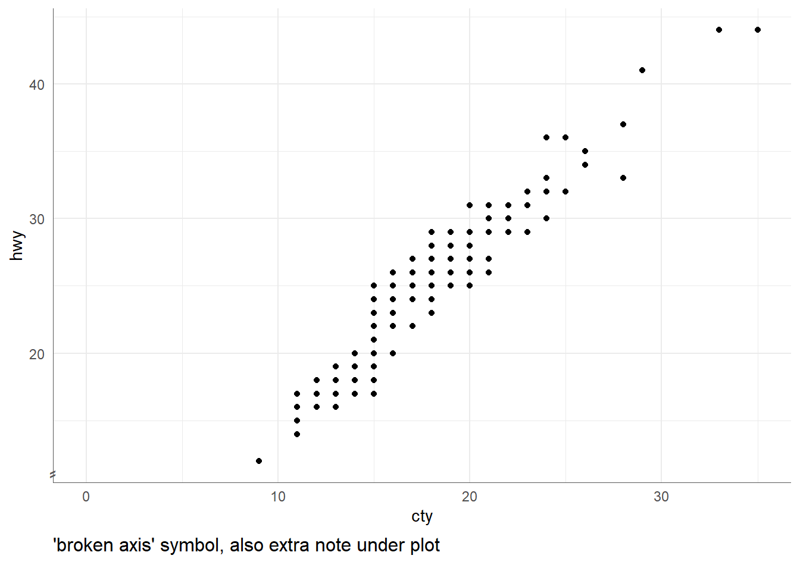

library(tidyverse)13 Data Viz
13.1 Axis Breaks
13.1.1 {ggbreak}
df <- data.frame(a = c(1,2,3,500), b = c('a1', 'a2','a3', 'a4'))
ggplot(df) +
aes(x = b, y = a) +
geom_col() +
ggbreak::scale_y_break(c(5, 490))13.1.2 {ggforce}::facet_zoom
df <- data.frame(a = c(1,2,3,500), b = c('a1', 'a2','a3', 'a4'))
ggplot(df) +
aes(x = b, y = a) +
geom_col() +
ggforce::facet_zoom(ylim = c(0, 5))
13.2 Annotation outside panel
The one time I’ve done this is to add a axis break symbol for when the y axis does not start at zero. In addition to adding the symbol, you also have to set the ggplotGrob to not clip items outside the plot panel.
base <- mpg %>%
ggplot(aes(x = cty, y = hwy)) +
geom_point() +
lims(x = c(0, NA)) +
theme_minimal() +
theme(axis.line = element_line(color = "grey35", size = 0.25))Warning: The `size` argument of `element_line()` is deprecated as of ggplot2 3.4.0.
ℹ Please use the `linewidth` argument instead.p.zoomin <- base +
annotate("text"
, x = -Inf, y = -Inf #bottom left corner of plot
, label = "\u2e17" #symbol ⸗ (diag double hyphen)
, color = "grey35" #same color as axis.line
, size = 4.5 #adjust based on out plot size
, vjust = -0.25 #adjust further up
)
#get grob instructions
g.zoomin <- ggplotGrob(p.zoomin)
#turn panel clipping off
g.zoomin$layout$clip[g.zoomin$layout$name == "panel"] = "off"
#draw final
cowplot::ggdraw(
cowplot::add_sub(
g.zoomin
, "'broken axis' symbol, also extra note under plot"
, size = 12
, x = 0
, hjust = 0
#, y = 1.25 #same line as x axis title
))
13.3 Secondary Legend
13.3.1 NA Legend
Added automatically if NA is part of discrete legend, but is NOT included automatically for continuous legend.
set.seed(20220713)
states_sf <- urbnmapr::get_urbn_map(map = "states", sf = TRUE) %>%
#set new CRS
sf::st_transform(states_sf, crs = 4326) %>%
mutate(
val_dis = sample(c("A", "B", "C"), nrow(.), TRUE)
, val_con = sample(-50:50 , nrow(.), TRUE)
) %>%
mutate(
val_dis = ifelse(state_abbv == "MN", NA, val_dis)
, val_con = ifelse(state_abbv == "MN", NA, val_con)
)old-style crs object detected; please recreate object with a recent sf::st_crs()ggplot(states_sf) + geom_sf(aes(fill = val_dis))ggplot(states_sf) + geom_sf(aes(fill = val_con))Add NA legend to continuous plot:
ggplot(states_sf) +
geom_sf(aes(fill = val_con, color = "")) +
scale_fill_continuous(na.value = "grey40") +
scale_color_manual(values = NA) +
guides(
color = guide_legend("NA", override.aes = list(fill = "grey40"))
, fill = guide_colorbar(order = 1)
) 13.3.2 2+ Special Values
library(cowplot)
Attaching package: 'cowplot'The following object is masked from 'package:lubridate':
stamp#special value for 'suppressed' data
states_sf <- states_sf %>%
mutate(val_con = ifelse(state_abbv == "CA", 999, val_con))
## Main Plot
p.main <- ggplot(states_sf) +
geom_sf( # non-special values, typical cont. color bar
data = filter(states_sf, val_con != 999 & !is.na(val_con))
, aes(fill = val_con), color = NA
) +
geom_sf( # NA states (missing data)
data = filter(states_sf, is.na(val_con))
, fill = "grey30", color = NA
) +
geom_sf( # Special values (suppressed data)
data = filter(states_sf, val_con == 999)
, fill = "grey80", color = NA
) +
geom_sf( # add borders for all
fill = NA, color = "white"
)
## Dummy Plot for 2nd Legend
p.missup <- tibble(val = c(0, 1), type = c("Missing", "Suppressed")) %>%
ggplot() +
geom_bar(aes(val, fill = type)) +
scale_fill_manual(name = NULL
, values = c("grey30", "grey80")
, guide = guide_legend( byrow = TRUE)
) +
theme(legend.spacing.y = unit(5, "pt"))
## Pull out legends and combine
leg.main <- cowplot::get_legend(p.main)
leg.sec <- cowplot::get_legend(p.missup)
leg.final <- cowplot::plot_grid(leg.main, leg.sec, ncol = 1, align = "v")
## Remvoe main legend from plot
p.final <- p.main + theme(legend.position = "none")
## Combined everything
cowplot::plot_grid(p.final, leg.final, nrow = 1, rel_widths = c(4, 1))OUTSTANDING
- how to minimize space between main legend and secondary legend
grid::grid.draw(rbind(leg.main, leg.sec))binds together without huge space, but need to figure out how to add to another ggplot item
13.4 hjust/vjust
Why do I always forget the direction of these?
hjust: 0 = left-aligned, 0.5=center, 1 = right-aligned
vjust: 0 = top-aligned, 0.5=middle, 1 = bottom-aligned
hjustvjust <- expand.grid(
hjust=c(0, 0.5, 1),
vjust=c(0, 0.5, 1),
angle=c(0, 45, 90),
text="TEXT")
ggplot(hjustvjust, aes(x=hjust, y=vjust)) +
geom_point() +
geom_text(aes(label=text, angle=angle, hjust=hjust, vjust=vjust)) +
facet_grid(~angle) +
scale_x_continuous(breaks=c(0, 0.5, 1), expand=c(0, 0.2)) +
scale_y_continuous(breaks=c(0, 0.5, 1), expand=c(0, 0.2)) +
labs(
title="Various values of angle, hjust and vjust in ggplot \n"
, y ="vjust \n"
, x =" \n hjust"
) +
theme_bw() +
theme(
axis.text = element_text(color="black", face="bold" , size=12)
, axis.title = element_text(color="black", face="plain", size=24)
, plot.title = element_text(color="black", face="bold" , size=18)
) 13.5 Math Expressions
13.5.1 Use quote()
ggplot(mpg, aes(displ, hwy))+geom_point()+
ggtitle(
quote(
alpha ^ 2 - frac(1, 10) + sum(n[i], i==1, N)
) #end quote
) #end of ggtitle13.5.2 Use TeX() from the latex2exp package
- must be in a string
- must be denoted as math mode with dollar signs
- must include 2 backslashes for \(\LaTeX\) commands
library(latex2exp)
ggplot(mpg, aes(displ, hwy))+geom_point()+
ggtitle(TeX(
"$\\alpha^2 - \\frac{1}{10} + \\sum_{i}^N n_i$"
) #end TeX
) #end ggtitle13.6 Facets: scales/space
Another option is facet_wrap() or facet_grid(), which can works if the axes are the same for the different variables you want to compare, but be careful as facets are supposed to be comparing items with the same measurements.
tidy.df <- tidyr::pivot_longer(
mpg, c(class, drv)
, names_to = "category"
, values_to = "type"
)scales = "free": removes types from the axis if that category has 0 cars of that type
ggplot(tidy.df, aes(type)) +
geom_bar() + coord_flip() +
facet_wrap(~category, ncol = 1, scales = "fixed") +
labs(title = 'facet_wrap: scales = "fixed"')
ggplot(tidy.df, aes(type)) +
geom_bar() + coord_flip() +
facet_wrap(~category, ncol = 1, scales = "free") +
labs(title = 'facet_wrap: scales = "free"')space = "free": spaces based on number of obs (i.e. number of bars); rather than giving each facet equal sizing, ONLY available for facet_grid
ggplot(tidy.df, aes(type)) +
geom_bar() + coord_flip() +
facet_grid(category ~ ., scales = "fixed" , space = "fixed") +
labs(title = 'facet_grid: scales = "fixed" and space = "fixed"')
ggplot(tidy.df, aes(type)) +
geom_bar() + coord_flip() +
facet_grid(category ~ ., scales = "free" , space = "free") +
labs(title = 'facet_grid: scales = "free" and space = "free"')13.7 Align Axes
Sometimes I’m working on two different types of plots (like a bar chart and a scatter plot) that happen to have the same x-axis. I want to line up these axes so that when the plots are stacked the values correspond to the same date.
13.7.1 gridExtra::grid.arrange() and cowplot::plot_grid()
# two different bar charts
A <- ggplot(mpg, aes(class))+geom_bar()+coord_flip()+ylim(0, 109)
B <- ggplot(mpg, aes(drv))+geom_bar()+coord_flip()+ylim(0, 109)Using grid.arrange command from the gridExtra package does not line up axes.
#axes don't line up
gridExtra::grid.arrange(A, B, ncol=1)grid.draw command from the grid package to left align graph edges .The cowplot::plot_grid() function allows you to line up plots by a specific axis.
#make plots into Grobs (grid graphical object)
gA <- ggplotGrob(A)
gB <- ggplotGrob(B)
grid::grid.draw(rbind(gA, gB))
cowplot::plot_grid(A, B, ncol = 1, align = "v")13.7.2 Mixed Geoms
Scatter plots and bar charts will not line up automatically, even when using the grid.draw/plot_grid command detailed above. This is because their default limits are different given that the bar chart is centered on the value and the scatter plot is a single point on the value.
#work with smaller subset of economics (ggplot2)
startdate <- "2014-06-01"
economics_small <- economics %>%
filter(date >= as.Date(startdate)) %>%
arrange(date)A <- ggplot(economics_small, aes(date, unemploy))+
geom_bar(stat="identity")+
geom_vline(xintercept = as.Date(startdate), color="red", size=2)Warning: Using `size` aesthetic for lines was deprecated in ggplot2 3.4.0.
ℹ Please use `linewidth` instead.B <- ggplot(economics_small, aes(date, uempmed))+
geom_point()+geom_line()+
geom_vline(xintercept = as.Date(startdate), color="red", size=2)
gA <- ggplotGrob(A)
gB <- ggplotGrob(B)
#grid::grid.draw(rbind(gA, gB))
cowplot::plot_grid(A, B, ncol = 1, align = "v")In order to line the up there a a couple of options.
13.7.2.1 Fix xlim
If you make the limit the first x-value, the bar chart will not show up (remember it’s centered over the value).
A <- ggplot(economics_small, aes(date, unemploy))+
geom_bar(stat="identity")+
geom_vline(xintercept = as.Date(startdate), color="red", size=2)+
xlim(as.Date(startdate), NA)
B <- ggplot(economics_small, aes(date, uempmed))+
geom_point()+geom_line()+
geom_vline(xintercept = as.Date(startdate), color="red", size=2)+
xlim(as.Date(startdate), NA)
gA <- ggplotGrob(A) Warning: Removed 1 rows containing missing values (`geom_bar()`).gB <- ggplotGrob(B)
#grid::grid.draw(rbind(gA, gB))
cowplot::plot_grid(A, B, ncol = 1, align = "v")Warning: Removed 1 rows containing missing values (`geom_bar()`).This can be fixed by adding a half unit to the x-axis (i.e. having the lower limit be half-unit lower than smallest x-value). In this case the unit is a month, so a half-unit would be ~15 days.
HalfUnit <- .5*(economics_small$date[2] - economics_small$date[1])
HalfUnitTime difference of 15 daysA <- ggplot(economics_small, aes(date, unemploy))+
geom_bar(stat="identity")+
geom_vline(xintercept = as.Date(startdate), color="red", size=2)+
xlim(as.Date(startdate)-HalfUnit, NA)
B <- ggplot(economics_small, aes(date, uempmed))+
geom_point()+geom_line()+
geom_vline(xintercept = as.Date(startdate), color="red", size=2)+
xlim(as.Date(startdate)-HalfUnit, NA)
gA <- ggplotGrob(A)
gB <- ggplotGrob(B)
#grid::grid.draw(rbind(gA, gB))
cowplot::plot_grid(A, B, ncol = 1, align = "v")
13.7.2.2 Shift Bar Chart
Bar charts are automatically centered over the x-value. Bar charts (and any geom object) can be shifted by usingposition - position_nudge()). The shift needs to be half a unit on the x-axis, again here it is monthly data so a half unit would be ~15 days.A <- ggplot(economics_small, aes(date, unemploy))+
geom_bar(stat="identity", position = position_nudge(x = as.vector(HalfUnit)))+
geom_vline(xintercept = as.Date(startdate), color="red", size=2)
B <- ggplot(economics_small, aes(date, uempmed))+
geom_point()+geom_line()+
geom_vline(xintercept = as.Date(startdate), color="red", size=2)
gA <- ggplotGrob(A)
gB <- ggplotGrob(B)
#grid::grid.draw(rbind(gA, gB))
cowplot::plot_grid(A, B, ncol = 1, align = "v")13.8 Default ggplot2
13.8.1 Colors
Default colors can be recreated using scales::hue_pal() and can be shown using scales::show_col()
scales::show_col(scales::hue_pal()(4))13.9 Geom Defaults
Look up geom’s default aes using: GeomName$default_aes$
Example: geom_text()
GeomText$default_aesAesthetic mapping:
* `colour` -> "black"
* `size` -> 3.88
* `angle` -> 0
* `hjust` -> 0.5
* `vjust` -> 0.5
* `alpha` -> NA
* `family` -> ""
* `fontface` -> 1
* `lineheight` -> 1.213.10 Links
new sections
- Stack Overflow | Consistently center ggplot title across PANEL not PLOT
- Stack Overflow | customize ggplot2 axis labels with different colors
shape/line in ggplot
- SAPE | ggplot2 Quick Reference: size
- SAPE | ggplot2 Quick Reference: shape
- Albert’s Blog | Point Shape Options in ggplot
layout
- Baptiste Augie, Jul 2019 | Laying out multiple plots on a page
- Datanovia | How To Easily Customize GGPlot Legend for Great Graphics
- R project | tableGrob - Displaying tables as grid graphics
- Statistics Globe | Remove Border of ggplot2 geom_label Text Annotation in R
- {gridExtra}::tableGrob
- Stack Overflow | ggplot2: change colour of font and background in facet strip?
other